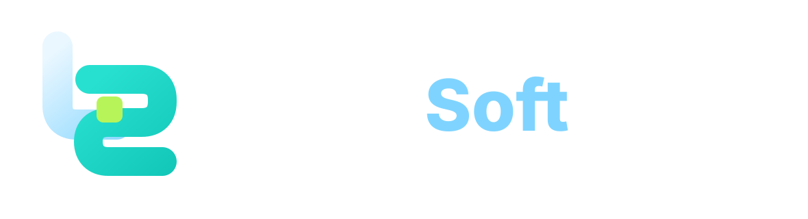
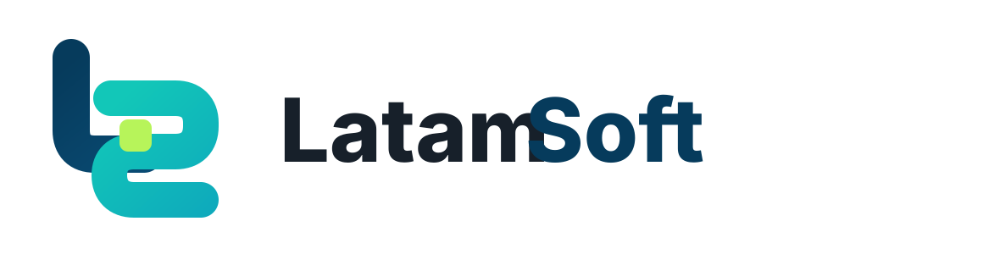
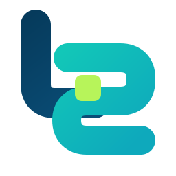
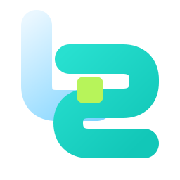
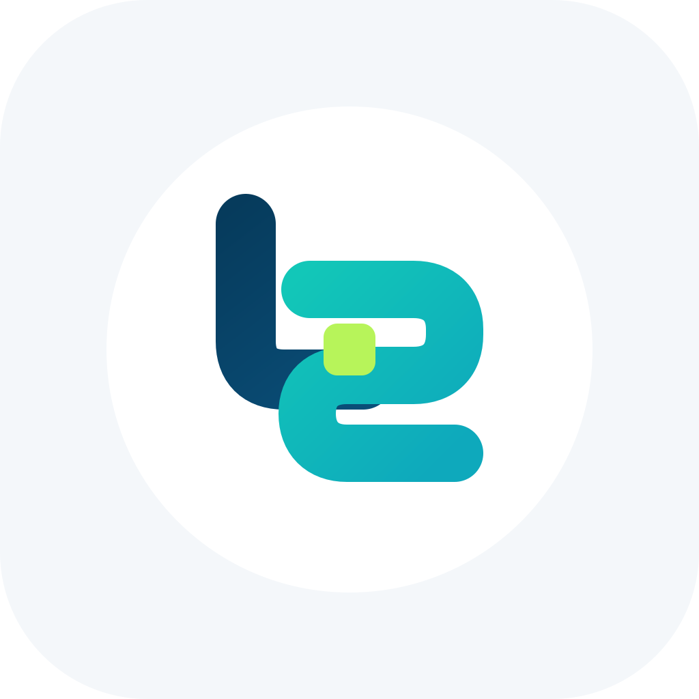
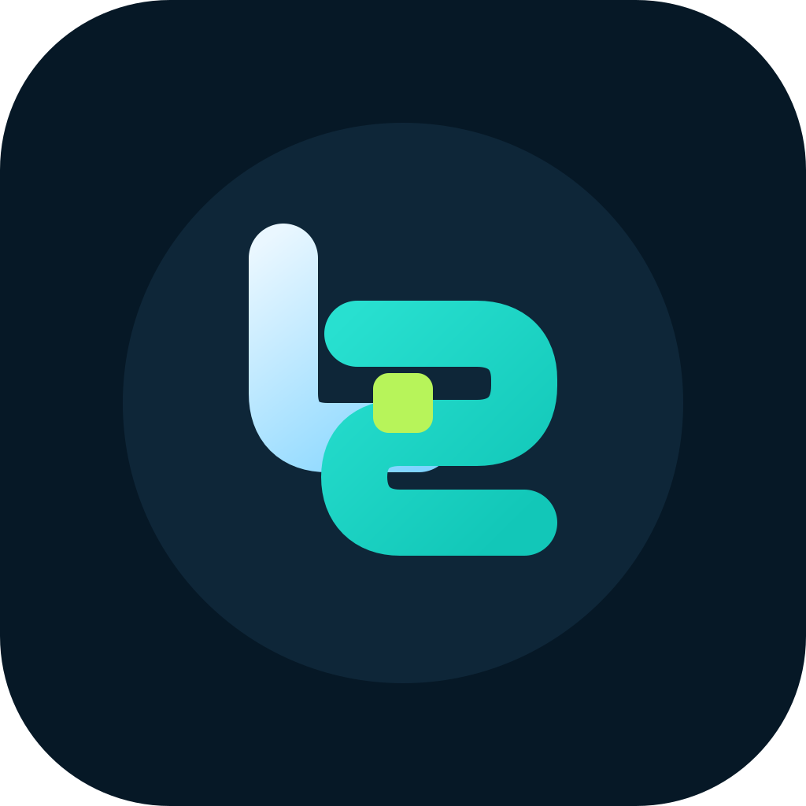

Software que simplifica procesos
Identidad visual para una marca tecnologica joven, confiable y visionaria, creada desde Latinoamerica con enfoque internacional.
Esencia
LatamSoft combina desarrollo de software a medida, automatizacion de procesos y productos digitales propios. Su posicionamiento recomendado es tecnologia clara, flexible y confiable para empresas que necesitan operar mejor.
Propuesta de valor: LatamSoft ayuda a empresas a automatizar procesos mediante software a medida y productos digitales, combinando calidad tecnica, innovacion y flexibilidad para simplificar operaciones, optimizar recursos y reducir costos.
Visionaria Joven Confiable Creativa Tecnica pero claraSistema De Logo



Concepto
El simbolo combina de forma abstracta la L y la S. Sugiere flujo digital, automatizacion, conexion y movimiento. La referencia a Latinoamerica debe mantenerse sutil, sin mapas literales.
Uso
- Isologo horizontal para web, propuestas y presentaciones.
- Simbolo LS para avatar, favicon, app icon y productos digitales.
- Version dark sobre fondos oscuros y version light sobre fondos claros.
Colores
| Modo | Fondo | Texto | Accion |
|---|---|---|---|
| Claro | #F4F7FA / #FFFFFF | #17202A | #12C7B8 |
| Oscuro | #061826 / #0E2638 | #EAF7FF | #12C7B8 |
Tipografia
Titulares y marca: Space Grotesk. Texto y UI: Inter. Alternativa: Sora.
Usar pesos semibold y bold para titulares, regular para textos largos y bold para botones. Evitar fuentes decorativas o demasiado futuristas.
Modo Dark
El modo oscuro debe ser una parte principal de la marca, no una adaptacion secundaria. Usar fondo #061826, paneles #0E2638, texto #EAF7FF, turquesa para accion y lima como acento puntual.
- No usar el logo azul oscuro sobre fondos oscuros.
- No saturar la interfaz con turquesa y lima al mismo tiempo.
- Mantener contraste alto en botones, formularios y cards.
Redes Sociales


Usar el simbolo LS para avatar. En posts, usar titulares grandes, fondos limpios y acentos turquesa/lima. No usar el logo completo en espacios pequenos.
Pilares de contenido
- Automatizacion de procesos.
- Desarrollo de software a medida.
- Productos digitales propios.
- Claridad tecnica para negocios.
- Ahorro de tiempo, recursos y costos.
Web
La web debe ser clara, tecnologica y orientada a conversion. El archivo web/latamsoft-theme.css incluye tokens para modo claro y oscuro.
| Elemento | Recomendacion |
|---|---|
| Hero | Mensaje directo sobre automatizacion, ahorro y claridad. |
| Boton principal | Turquesa con texto oscuro. |
| Cards | Radio moderado, borde sutil y contenido escaneable. |
| Iconos | Lineales, simples, no genericos. |
Usos Correctos E Incorrectos
Correctos
- Mantener la escritura LatamSoft.
- Usar suficiente espacio alrededor.
- Usar el simbolo para tamanos pequenos.
- Aplicar version dark en fondos oscuros.
Incorrectos
- No usar mapas literales.
- No usar rojo como color de marca.
- No deformar ni estirar el logo.
- No usar engranajes, robots, cohetes o codigo como simbolo principal.